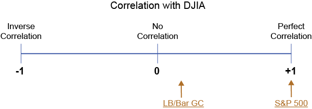

Three inputs are required to discern the Mean Variance Optimization (MVO) for any group of securities.
The third input, "correlation coefficient" needs some explanation. Correlation is defined as the degree to which two asset classes or investments will have similar returns (or act the same) under a specific set of market or economic conditions. Stated differently, it is a measure of how much the return of two investments "co-relate" to each other.
Typically, investments with "like" make-ups and "like" results have high correlation. Likewise, investments with "unlike" make-ups and "unlike" results have low correlation. This is illustrated in the following diagram, which shows how two indices correlate to the Dow Jones Industrial Average.
Click the underlined indices for an explanation of how they correlate to the Dow Jones Industrial Average
